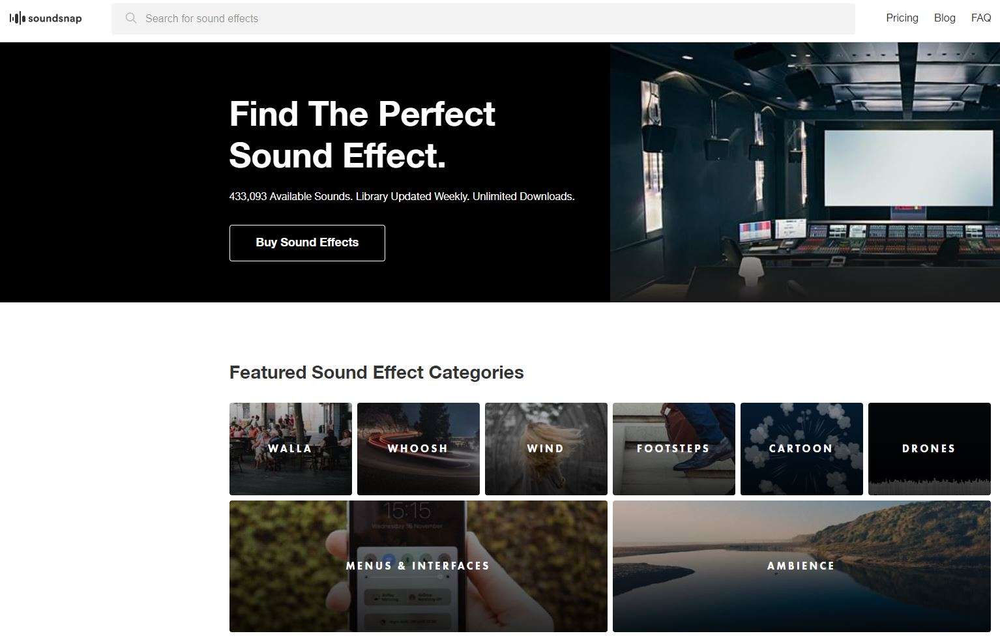

Pol Camacho
Art
Project Overview
My main job in this project has been searching, editing and preparing audio for the game. In all this 3 months, my job has been to make sure that the game contains enough auditive feedback, as well as the best audio quality.
Also, I have done many other things for the art department as secondary tasks (and not so secondary) like 3D animations or modeling.

My contribution
Audio guy
As I said before, my main contribution in the project has been searching, editing and implementing the majority of SFX and also some of the music tracks.
Searching
Through Soundsnap, Freesound or other audio platforms, I searched the best audios acorded to what was needed, always making sure that all audios where free to use and giving appropiate credit if necessary.

Editing
Once the audios were searched, I passed them in Audacity to edit their parameters, like pitch, volume or duration, and add some effects like low-pass filters or equalization filters.
Implementation
When the soundbanks were ready, I added them in the game project. Also, I have implemented some audios in code, but this was mostly Marc Rosell's task.
Wwise step
Edited audios were added in a Wwise project, where I organise and putted them ready to be implemented by generating soundbanks.
Register and audio state update
Apart from doing this work, I was in charged to create and update an audio list, where I putted all links and credits. Also, I had an excel with audio peticions from other project mates or my own ones, where I updated audio state (planned, edited, in Wwise or implemented). And finally, the last weeks I had an audio document with all the polish that had to be made in order to improve audio quality, and it worked the same as the excel.


Animations
Apart from doing audio work, I have done some character animations.
Din Djarin
For Din Djarin, I did the idle animation and the first iteration of dash movement.


Skytrooper
For skytrooper enemy, I did all of his animations (idle, wander, shoot and dash).


Greef Karga
And finally, for Greef Karga character, I did 2 cantine animations: A greeting and a head-move looking.


3D Modeling
Also, I did some 3D models for environment and props.
Tatooine house
Game shop model
... and some 2D work
And finally, my last contribution in this project was doing some game boons in 2D.
Ashoka's determination

Five's accuracy

Rex accuracy